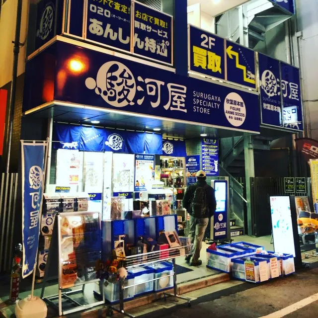
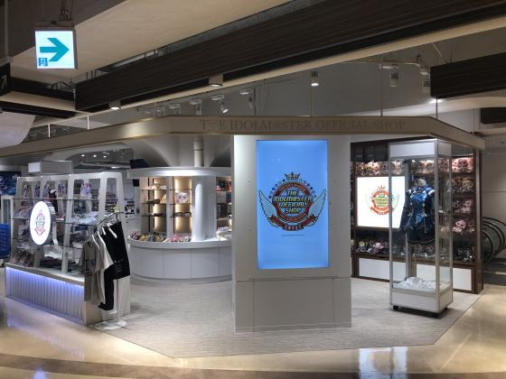
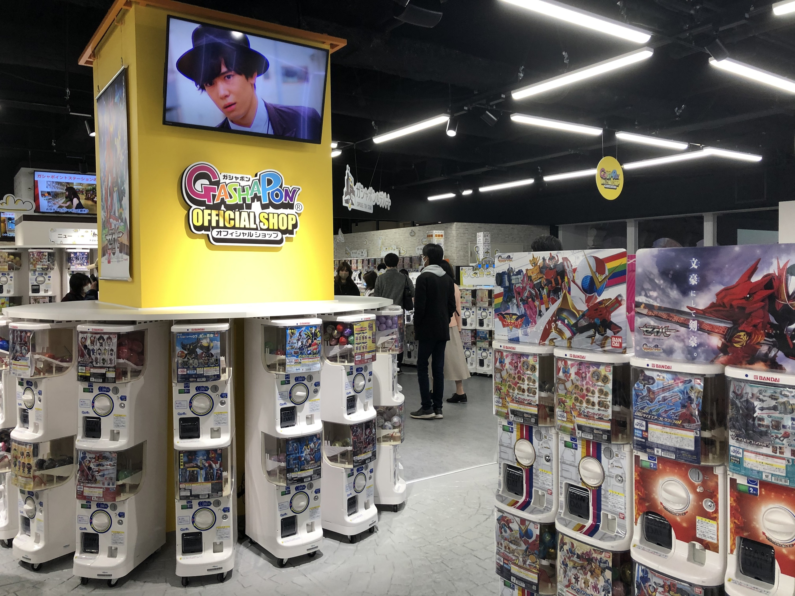

Destinasi Populer

Love live! Series official store School Idol Theater
Pusat belanja merchandise seri LoveLive!

SURUGAYA Akibahara
Tempat jual beli merchandise baru dan bekas untuk semua kalangan!

THE IDOLM@STER Official Shop
Toko merchandise resmi dari seri THE IDOLM@STER.

Bandai Namco Gashapon
Toko resmi mesin kapsul (gashapon) dari Bandai — cocok sebagai quick stop souvenir.